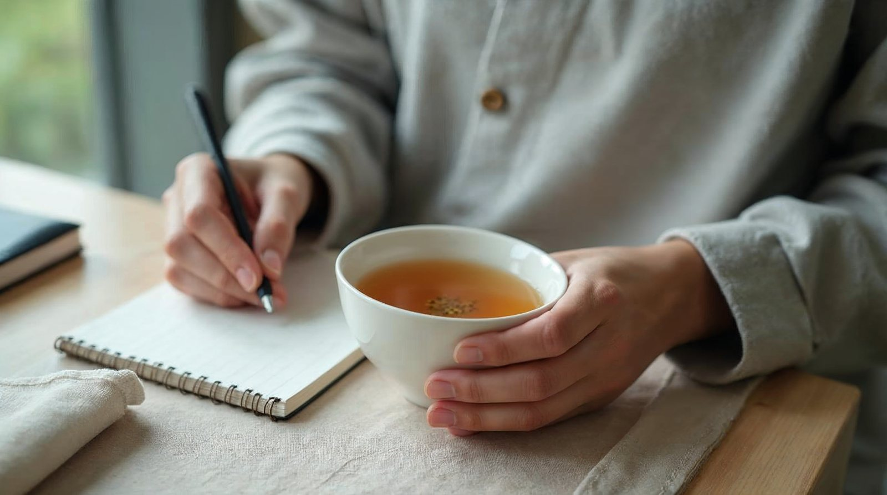
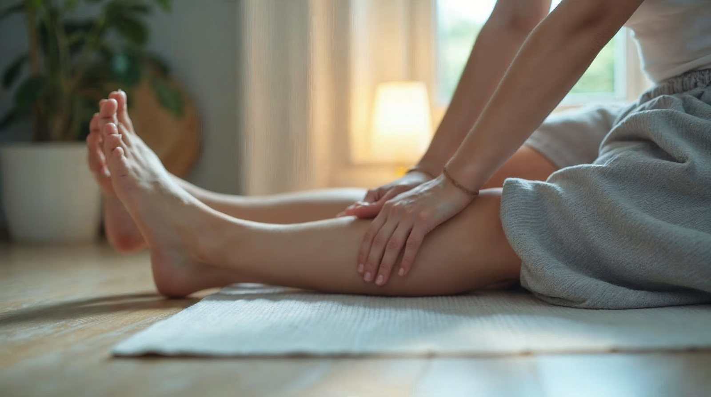
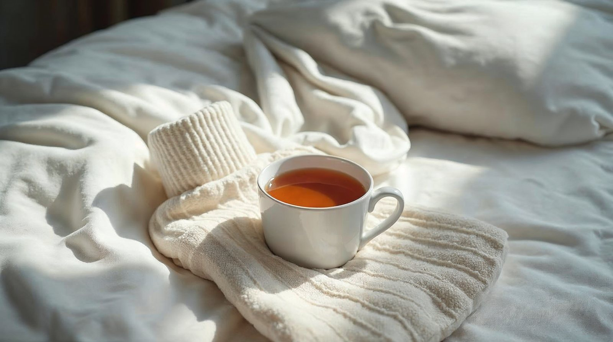
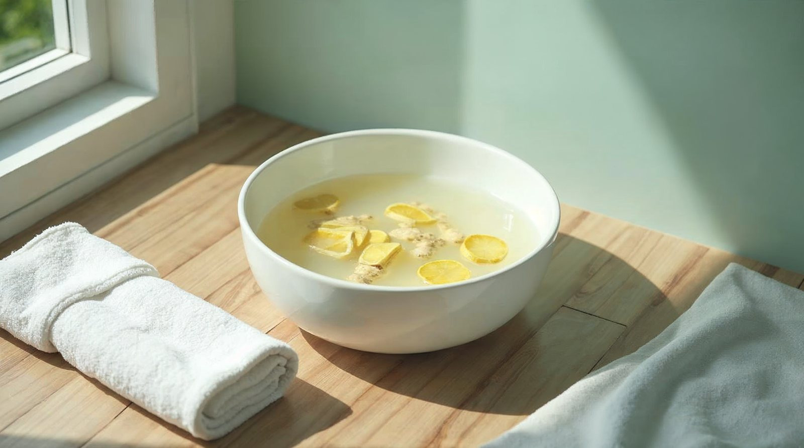
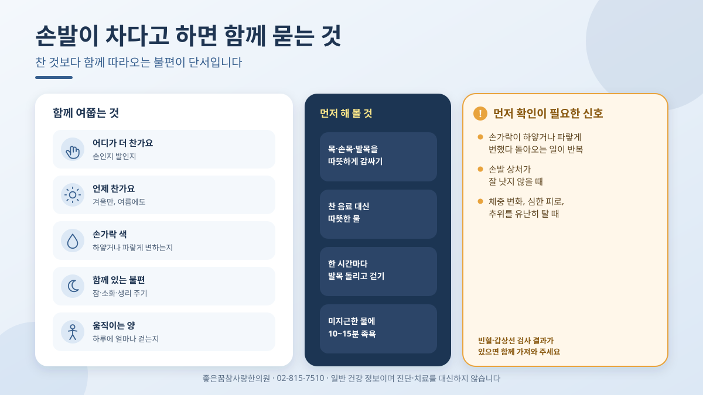

이종호 한의사 감수좋은꿈참사랑한의원 대표원장 (한의사 면허번호 19769)발행 2026-11-23 · 수정 2026-11-26
이 글의 차례
- 왜 이런 불편이 생길 수 있나요
- 손발이 차가운 모습은 어떻게 나눠서 살피나요?
- 왜 잠과 소화, 생리 주기까지 함께 묻나요?
- 먼저 이렇게 여쭙니다
- 손발 냉감과 비슷한 다른 불편은 어떻게 구분하나요?
- 일상에서 먼저 해 볼 수 있는 것
- 집에서 손발을 데울 때 알아 두면 좋은 요령
- 식사는 어떻게 챙기면 좋을까요?
- 발이 차서 잠들기 어렵다면?
- 긴장할 때 손발이 차가워진다면?
- 어떤 움직임이 손발 온기에 도움이 될까요?
- 계절에 따라 손발 냉감이 어떻게 달라질 수 있나요?
- 상황별 예시
- 스스로 점검해 보세요
- 한의원에서 함께 살필 수 있는 경우
- 아이나 어르신의 손발이 찰 때는 무엇을 더 살피나요?
- 첫 방문은 이렇게 진행됩니다
- 얼마나 지켜보고 언제 상담할까요?
- 이렇게 기록해 오시면 상담이 쉬워집니다
- 이런 증상은 먼저 확인이 필요합니다
손발이 차다고 하시면 손과 발 중 어디가, 언제, 어떻게 차가운지와 함께 잠, 소화, 생리 주기, 긴장 정도를 묻습니다. 손발이 찬 것 자체보다 함께 따라오는 불편이 무엇인지가 몸 상태를 이해하는 중요한 단서가 되기 때문입니다. '저는 원래 손발이 차요'라는 말은 진료실에서 아주 자주 듣는 이야기입니다.
같은 '손발이 차다'는 말도 사람마다 뜻이 조금씩 다릅니다. 만져 보면 실제로 차가운 분도 있고, 손은 따뜻한데 본인만 속에서 시리다고 느끼는 분도 있습니다. 그래서 저는 손을 직접 잡아 보기 전에 어떤 느낌인지부터 천천히 여쭙니다.
손발이 찬 것을 오랫동안 '원래 그런 체질'로 여기며 지내 온 분이 많습니다. 하지만 언제부터, 어떤 생활 속에서 더 차가워졌는지를 짚어 보면 바꿔 볼 수 있는 부분이 생각보다 많이 보입니다. 진료실에서는 그 실마리를 함께 찾는 데 시간을 씁니다.
왜 이런 불편이 생길 수 있나요
- 추울 때 몸은 중심의 온기를 지키려고 손발 쪽 혈관을 좁히는데, 이 반응이 예민한 분은 손발이 쉽게 차가워질 수 있습니다.
- 긴장하거나 스트레스를 받을 때도 손발이 차가워지는 분들이 있습니다.
- 활동량과 근육량이 적거나, 끼니를 거르고 찬 음료를 자주 드시는 생활도 영향을 줄 수 있습니다.
- 빈혈이나 갑상선 기능 변화처럼 다른 원인이 함께 있는 경우도 있어 구분이 필요합니다. 한의학에서는 몸의 온기를 소화, 잠, 대소변과 함께 살핍니다.
손발이 차가운 모습은 어떻게 나눠서 살피나요?
'차다'는 한마디를 네 가지로 나눠 여쭤 보면 훨씬 많은 것이 보입니다.
- 어디가: 손만인지, 발만인지, 손발 모두인지, 한쪽만인지
- 언제: 겨울에만인지, 에어컨 아래 여름에도인지, 긴장할 때인지, 식사 뒤나 아침에 특히 그런지
- 어떻게: 차갑기만 한지, 저리거나 시린지, 땀이 나서 축축하고 차가운지
- 무엇과 함께: 아랫배도 찬지, 얼굴은 화끈거리는데 손발만 찬지, 피로나 잠 문제가 같이 있는지
예를 들어 얼굴과 가슴은 답답하게 열이 오르는데 손발은 차갑다는 분과, 온몸이 다 춥고 아랫배까지 차갑다는 분은 같은 '수족냉증'이라도 살필 방향이 다릅니다.
왜 잠과 소화, 생리 주기까지 함께 묻나요?
손발의 온기는 몸 전체가 열을 얼마나 만들고 어디로 보내는지에 따라 달라집니다. 잘 먹고 잘 소화해야 열을 만들 재료가 생기고, 잘 자야 몸이 회복하며, 생리 주기에 따라 몸의 온도와 혈액 흐름이 달라지기도 합니다.
그래서 손발이 찬 분께 소화가 더딘지, 잠은 깊은지, 생리 전후로 손발이 더 차가워지는지를 함께 여쭙니다. 이 이야기들이 같은 방향을 가리키면 손발 냉감을 몸 전체의 흐름 속에서 이해하기가 쉬워지고, 생활에서 무엇부터 바꿀지도 정하기 쉬워집니다.
반대로 소화와 잠은 괜찮은데 손발만 차다면, 옷차림과 활동량, 앉아 있는 환경 같은 바깥 조건을 먼저 살펴봅니다.

먼저 이렇게 여쭙니다
- 손과 발 중 어디가 더 차가운가요?
- 겨울에만 그런가요, 여름에도 그런가요?
- 손가락 색이 하얗거나 파랗게 변한 적이 있나요?
- 소화, 잠, 생리 주기에 불편이 함께 있나요?
- 하루에 얼마나 걷고 움직이시나요?
손발 냉감과 비슷한 다른 불편은 어떻게 구분하나요?
손발이 차다고 오셨는데 이야기를 나눠 보면 다른 불편이 섞여 있는 경우도 있습니다.
- 손끝이 저리고 찌릿하며 밤에 더 심하다면, 차가움보다 손목이나 목 쪽 신경 문제를 함께 살핍니다.
- 다리가 무겁고 저녁에 붓는다면 다리 혈액 순환과 오래 서 있는 생활을 함께 봅니다.
- 손발에 땀이 많아 늘 축축하다면 땀이 마르며 열을 빼앗아 더 차갑게 느껴질 수 있어, 땀 이야기를 함께 여쭙니다.
- 추위를 유난히 타고 피로, 체중 증가, 변비가 함께 생겼다면 갑상선 검사를 먼저 받아 보시도록 권하기도 합니다.
이렇게 나눠 보는 것은 집에서 해 볼 일이 서로 다르기 때문입니다. 차가움이 중심이면 몸을 데우는 생활을, 저림이 중심이면 자세와 손목 사용을 먼저 살핍니다.

일상에서 먼저 해 볼 수 있는 것
- 목, 손목, 발목을 따뜻하게 감싸기
- 찬 음료를 줄이고 따뜻한 물 마시기
- 오래 앉아 있을 때 한 시간마다 발목 돌리고 일어나 걷기
- 잠들기 전 미지근한 물로 족욕하기
- 끼니를 거르지 않기
집에서 손발을 데울 때 알아 두면 좋은 요령
손발만 데우기보다 몸 중심과 큰 근육을 함께 데우는 것이 오래가는 경우가 많습니다.
- 두꺼운 옷 한 벌보다 얇은 옷을 여러 겹 입고, 배와 허리를 덮는 옷을 챙기기
- 양말은 발목을 조이지 않는 것으로, 잘 때 신는 양말은 특히 느슨한 것으로 고르기
- 앉아 있는 동안 뒤꿈치 들었다 내리기를 20번쯤 해서 종아리 근육을 움직이기
- 아침에는 따뜻한 국이나 차로 속을 먼저 데우기
- 핫팩은 옷 위에 대고, 한자리에 오래 두지 않기(낮은 온도에서도 오래 닿으면 화상을 입을 수 있습니다)
커피를 많이 드시는 분은 손발이 더 차게 느껴진다고 말씀하시는 경우도 있어, 하루 잔 수를 함께 적어 보시길 권합니다.
식사는 어떻게 챙기면 좋을까요?
몸이 열을 만들려면 먹은 것이 있어야 합니다. 바쁜 아침을 거르거나 샐러드와 찬 음료로 끼니를 대신하는 날이 이어지면 오후가 될수록 손발이 차가워진다는 분이 많습니다.
- 아침은 적게라도 따뜻한 것으로 먹기(죽, 국, 달걀 같은 간단한 음식도 괜찮습니다)
- 끼니마다 생선, 두부, 달걀, 고기 같은 단백질 반찬을 한 가지씩 곁들이기
- 얼음 음료와 찬 과일은 식사 직후보다 사이사이 조금씩 먹기
- 늦은 밤 기름진 야식은 잠을 얕게 해 다음 날 아침을 더 춥게 느끼게 할 수 있어 줄이기
발이 차서 잠들기 어렵다면?
몸은 잠들 무렵 손발로 열을 내보내며 중심 온도를 조금 낮추는데, 손발이 차가우면 이 과정이 더뎌 잠들기까지 오래 걸린다는 분이 있습니다. 손발 냉감이 잠 문제와 함께 오는 경우가 많은 까닭입니다.
- 잠들기 한두 시간 전에 미지근한 물로 샤워하거나 족욕하기
- 발목을 조이지 않는 느슨한 수면 양말 신기
- 전기장판을 쓴다면 잠들기 전 이불 속만 미리 데우고, 잠든 뒤에는 꺼지도록 타이머 맞추기
- 누워서 발목을 천천히 돌리고, 발가락을 오므렸다 펴기를 몇 번 하기
잠자리에 들기 직전까지 휴대폰을 보면 긴장이 이어져 손발이 더 차게 느껴질 수 있어, 화면은 조금 일찍 내려놓아 보세요.
긴장할 때 손발이 차가워진다면?
긴장하면 몸은 손발보다 심장과 큰 근육 쪽으로 피를 먼저 보내, 손끝과 발끝이 금세 차가워집니다. 회의나 시험 직전에 손이 얼음처럼 차가워지는 것도 이런 반응입니다.
이럴 때는 숨을 길게 내쉬는 연습이 도움이 되는 경우가 많습니다. 넷을 세며 들이쉬고 여섯을 세며 내쉬기를 다섯 번쯤 하고, 두 손을 비벼 따뜻하게 한 뒤 어깨를 한 번 내려 보세요. 긴장이 잦아 손발 냉감이 이어진다면 잠과 하루 일정도 함께 살펴봅니다.
어떤 움직임이 손발 온기에 도움이 될까요?
근육은 움직일 때 열을 만들고, 종아리와 허벅지 근육은 다리의 혈액을 위로 올려 보내는 펌프 역할도 합니다. 그래서 손발이 찬 분께는 거창한 운동보다 하루 중 자주 움직이는 습관을 먼저 권합니다.
- 출퇴근길에 한 정거장 먼저 내려 10~15분 걷기
- 두세 층 정도는 계단으로 오르기
- TV를 보며 의자에서 일어났다 앉기를 10번씩 두세 번
- 손이 시릴 때 주먹을 꽉 쥐었다 쫙 펴기를 20번쯤 하기
처음부터 오래 하려 하기보다, 매일 조금씩 이어 가는 편이 몸에 맞는 경우가 많습니다. 운동한 날 저녁 손발 느낌이 어땠는지 적어 두면 어떤 움직임이 맞는지 알기 쉬워집니다. 무릎이나 허리가 불편해 걷기가 어렵다면 앉아서 할 수 있는 동작부터 함께 골라 봅니다.
계절에 따라 손발 냉감이 어떻게 달라질 수 있나요?
겨울에는 바깥과 실내의 온도 차가 커서 들어오고 나갈 때마다 손발 혈관이 좁아졌다 넓어지기를 되풀이합니다. 외출할 때는 장갑과 목도리로 손목과 목을 먼저 덮어 주세요.
여름에는 오히려 냉방 때문에 손발이 시리다는 분이 많습니다. 실내에서 얇은 겉옷과 덧신을 챙기고, 찬 음료는 하루 한두 잔으로 줄여 봅니다. 환절기에는 아침저녁 기온 차에 맞춰 겹쳐 입을 옷을 하나 더 챙기시면 좋습니다. 어느 계절에 가장 힘드신지 알려 주시면 그 계절이 오기 전에 미리 챙길 일을 함께 정할 수 있습니다.
상황별 예시
- 예를 들어 사무실 에어컨 바람이 바로 닿는 자리에 앉아 여름에도 발이 시린 직장인이라면, 책상 아래 무릎 담요와 덧신을 두고 한 시간마다 일어나 걷는 것부터 시작해 봅니다. 자리 바꾸기가 어렵다면 바람 방향을 바꿀 수 있는지도 살펴보세요.
- 예를 들어 시험이나 발표를 앞두면 손이 얼음장처럼 차가워지고 땀이 나는 수험생이라면, 긴장과 잠의 이야기를 함께 여쭙습니다. 시험 전 천천히 숨을 내쉬는 연습과 손을 따뜻하게 쥐는 습관을 함께 이야기합니다.
- 예를 들어 체중 관리를 한다며 아침과 점심을 거르고 찬 음료로 버티는 경우라면, 손발이 차가워진 시점과 식사가 달라진 시점을 나란히 놓고 봅니다. 끼니를 적게라도 따뜻하게 챙기는 것부터 다시 시작해 보고, 그 뒤 손발 느낌을 함께 살핍니다.
스스로 점검해 보세요
- 다른 사람과 악수하면 '손이 차다'는 말을 자주 듣는다.
- 여름에도 양말을 신고 자야 편하다.
- 아랫배를 만지면 손보다 차갑게 느껴진다.
- 찬 음식을 먹으면 배가 불편하거나 설사를 한다.
- 긴장하거나 화가 나면 손발이 먼저 차가워진다.
- 생리 전후로 손발이 더 차갑고 아랫배가 무겁다.
- 하루 대부분을 앉아서 보내고, 30분 넘게 걷는 날이 드물다.
해당하는 항목이 많다면 손발만이 아니라 소화와 잠, 활동량을 함께 살펴볼 때입니다. 진료 때 체크한 항목을 알려 주시면 이야기를 시작하기 쉽습니다.

한의원에서 함께 살필 수 있는 경우
- 손발 냉감이 이어지는 경우 진맥, 복진과 함께 잠과 소화, 생리 주기를 살핍니다.
- 긴장이 많아 손발이 차가워지는 경우 생활 리듬을 함께 살핍니다.
- 혈액 순환이나 갑상선 검사가 필요하다고 판단되면 다른 의료기관을 안내합니다.
좋은꿈참사랑한의원에서는 먼저 손발이 차가운 모습과 생활을 충분히 듣고, 진맥과 복진, 필요하면 설진으로 몸 상태의 단서를 모읍니다. 그 결과를 바탕으로 침, 온열 치료, 한약 상담 가운데 상태에 맞는 방법을 정하고, 검사가 먼저 필요하다고 판단되면 다른 의료기관을 안내합니다. 귀가 전에는 집에서 해 볼 생활 요령을 함께 정리해 드립니다.
아이나 어르신의 손발이 찰 때는 무엇을 더 살피나요?
아이는 몸이 작아 열을 빨리 잃기 쉽고, 춥다는 표현보다 '배가 아프다', '피곤하다'로 말하는 경우도 있습니다. 또 활동량과 식사량에 따라 손발 온기가 크게 달라집니다. 밥을 잘 먹는지, 밖에서 뛰어노는 시간이 얼마나 되는지, 배가 자주 아프다고 하지는 않는지를 함께 여쭙습니다.
어르신은 근육량이 줄어 몸에서 만드는 열이 적어지고, 드시는 약에 따라 손발 느낌이 달라지기도 합니다. 특히 당뇨가 있으시면 발 감각이 둔해 뜨거운 물이나 핫팩에 데어도 늦게 알아차리실 수 있어, 발을 데울 때는 가족이 온도를 먼저 확인해 드리시도록 부탁드립니다.
첫 방문은 이렇게 진행됩니다
- 이야기 듣기: 손발이 언제 어떻게 차가운지, 함께 있는 불편, 식사와 잠, 생리 주기, 하루 활동량을 먼저 충분히 듣습니다.
- 맥 짚기: 모든 분께 맥부터 짚어 몸 전체 상태를 살핍니다.
- 손발 직접 확인: 양쪽 손과 발을 직접 만져 온기를 비교하고, 손끝 색과 손톱 아래 색이 돌아오는 정도를 함께 봅니다.
- 배와 혀 살피기: 필요하면 누우신 상태에서 배의 온기와 긴장을 살피고, 혀의 색과 설태도 봅니다.
- 방향 정하기: 모은 단서를 바탕으로 생활 요령과 함께 침, 온열 치료, 한약 상담 가운데 상태에 맞는 방법을 정합니다. 한약은 드시는 약을 먼저 확인한 뒤 이야기하고, 임신 중이거나 계획 중이시면 미리 알려 주세요.
얼마나 지켜보고 언제 상담할까요?
- 옷차림과 활동량, 식사를 2~3주 조정해 보며 손발이 차가운 시간이 줄어드는지 적어 봅니다.
- 생활을 바꿔도 그대로이거나, 손발 냉감 때문에 잠들기 어렵고 소화나 생리 불편까지 함께 있다면 상담을 받아 보세요.
- 추위를 유난히 타면서 피로와 체중 변화가 함께 생겼다면 혈액검사를 먼저 받아 보시는 것도 방법입니다.

이렇게 기록해 오시면 상담이 쉬워집니다
- 손발이 특히 차가운 시간대와 계절
- 손가락 색이 변한 적이 있다면 그때 사진
- 생리 주기, 잠든 시간과 깬 횟수, 소화 상태
- 최근 건강검진의 빈혈·갑상선 관련 결과
기록은 하루 한 줄이면 충분합니다.
아침, 오후, 잠들기 전 세 번 손발이 얼마나 찬지를 0부터 10까지 숫자로 적고, 그날 식사와 활동, 긴장한 일을 짧게 붙여 보세요. 일주일만 모아도 어떤 날 더 차갑고 어떤 날 덜한지 흐름이 보입니다. 생리 주기가 있는 분은 주기의 어느 무렵이었는지도 함께 적어 두시면, 한 달 안에서 손발 온기가 어떻게 오르내리는지 함께 볼 수 있습니다.
이런 증상은 먼저 확인이 필요합니다
- 한쪽 손이나 발만 갑자기 차가워지고 창백해지거나 아픈 경우
- 손가락이 하얗거나 파랗게 변했다가 돌아오는 일이 반복되는 경우
이런 신호가 있으면 한의원보다 가까운 병원이나 응급실을 먼저 찾으세요.

여쭙는 것
- 손과 발 중 어디가 더 차가운가요?
- 겨울에만 그런가요, 여름에도 그런가요?
- 손가락 색이 하얗거나 파랗게 변한 적이 있나요?
생활에서 해 볼 것
- 목, 손목, 발목을 따뜻하게 감싸기
- 찬 음료를 줄이고 따뜻한 물 마시기
- 오래 앉아 있을 때 한 시간마다 발목 돌리고 일어나 걷기
한의원에서 함께 살필 것
- 손발 냉감이 이어지는 경우 진맥, 복진과 함께 잠과 소화, 생리 주기를 살핍니다.
- 긴장이 많아 손발이 차가워지는 경우 생활 리듬을 함께 살핍니다.
- 혈액 순환이나 갑상선 검사가 필요하다고 판단되면 다른 의료기관을 안내합니다.
먼저 확인이 필요한 신호
- 한쪽 손이나 발만 갑자기 차가워지고 창백해지거나 아픈 경우
- 손가락이 하얗거나 파랗게 변했다가 돌아오는 일이 반복되는 경우
한눈에 보는 표
| 구분 | 핵심 |
|---|---|
| 여쭙는 것 | 손과 발 중 어디가 더 차가운가요? 겨울에만 그런가요, 여름에도 그런가요? |
| 생활에서 해 볼 것 | 목, 손목, 발목을 따뜻하게 감싸기 찬 음료를 줄이고 따뜻한 물 마시기 |
| 한의원에서 함께 살필 것 | 손발 냉감이 이어지는 경우 진맥, 복진과 함께 잠과 소화, 생리 주기를 살핍니다. 긴장이 많아 손발이 차가워지는 경우 생활 리듬을 함께 살핍니다. |
| 먼저 확인이 필요한 신호 | 한쪽 손이나 발만 갑자기 차가워지고 창백해지거나 아픈 경우 손가락이 하얗거나 파랗게 변했다가 돌아오는 일이 반복되는 경우 |
자주 묻는 질문
손발이 찬 것도 진료를 받나요?
네. 함께 있는 불편과 생활 리듬을 살펴 이야기합니다.
수족냉증은 체질 때문인가요?
체질도 한 가지 요소지만 생활 습관과 다른 원인도 함께 살핍니다.
족욕은 얼마나 하면 되나요?
미지근한 물에 10~15분 정도로, 피부가 붉어질 만큼 뜨겁게 하지 않는 것이 좋습니다. 당뇨로 발 감각이 둔하면 온도를 손으로 먼저 확인하세요.
손발이 찬데 얼굴은 화끈거려요. 같이 이야기해도 되나요?
네. 위는 덥고 아래는 찬 모습은 진료실에서 자주 듣는 이야기라 함께 여쭙습니다. 언제 화끈거리는지와 잠, 긴장 정도를 함께 알려 주세요.
진료 시간은 어떻게 되나요?
좋은꿈참사랑한의원은 평일 09:30~20:00(점심 13:00~14:00), 토·일·공휴일 09:30~15:00에 진료합니다.
좋은꿈참사랑한의원은 재진 때 지난번 이야기부터 이어서 여쭙니다. 진료시간과 예약은 오시는 길에서 확인하세요.
어디서 상담받을 수 있나요?
좋은꿈참사랑한의원은 서울 동작구 만양로2길 2 신성빌딩 3층·5층(서울 동작구 상도동, 7호선 상도역 3번 출구 근처)에 있습니다. 한의사 3명(이종호 대표원장, 조영기 수석진료원장, 정원영 진료원장)이 진료합니다. 진료시간은 평일 09:30~20:00(점심 13:00~14:00), 토·일·공휴일 09:30~15:00이며, 방문 전 전화로 확인을 권합니다. 예약은 네이버 예약, 카카오톡 상담, 전화 02-815-7510로 받습니다.
이 글은 일반적인 건강 정보이며 개인의 진단이나 치료를 대신하지 않습니다. 증상이 있거나 복용 중인 약이 있다면 진료를 통해 확인하세요. 치료 효과는 개인마다 다를 수 있습니다.
작성 기준: 일반적으로 알려져 있는 건강 정보를 참고해 정리했습니다(대표원장 감수). 증상 기록은 1~2주 동안 하루 1회, 비슷한 시간에 적어 오시면 지난 상태와 비교하기 쉽습니다.